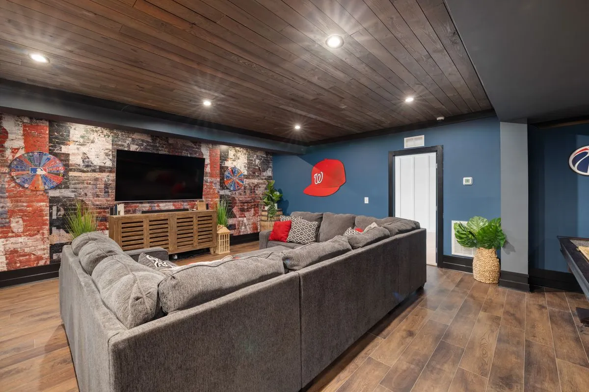
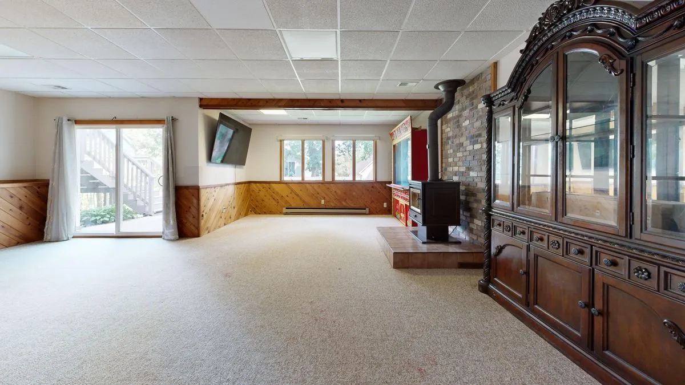

By Reno Rise. Published September 22, 2026. Last updated September 22, 2026. General planning information, not legal or engineering advice.

A basement renovation before and after almost always changes the same five things: light, moisture control, layout, ceiling finish and flooring. What differs is which room the space becomes. Below are the five transformations homeowners ask about most, what genuinely changes in each, and why chasing the after photo before fixing the before problem is how a nice basement becomes a repeat renovation.
A quick note before the pictures: these are common storylines, not one specific project. Every basement is a different “before,” and Reno Rise does not perform the renovation work itself; it matches your project with the contractor best suited to it. Think of the five below as a way to figure out which “after” you are actually picturing before you start asking contractors for one. If you want the full build sequence rather than the highlights, see basement renovation steps in order.
1. Unfinished Storage to Family Room

This is the classic “before”: bare block walls, exposed joists, a bare bulb, and boxes nobody has opened since the move. The “after” adds framed and insulated walls, a proper ceiling, lighting on more than one switch, and flooring suited to a slab. Nothing structural usually changes here, which is why it is the most common transformation and often the most affordable one. See basement renovation planning for how to scope it.
2. Damp and Musty to Dry and Finished

Your basement did not just start smelling weird. It has been filing complaints for months, and the “before” photo everyone hates is the water stain nobody wants to admit they have seen before. The real “after” here is not the paint colour, it is a diagnosed and fixed moisture source: a regraded downspout, repaired weeping tile, a sump pump, or exterior waterproofing, depending on where the water is actually coming from. See basement waterproofing before renovation for how that gets diagnosed.
3. Low Light to Home Office

Small, high basement windows are wonderful for one thing, which is making a room feel like a cellar. The transformation that changes this is usually a larger window, sometimes an egress window, paired with layered lighting so the room does not depend on daylight alone. Daylight and a safe exit are what turn a cellar into a home office people actually use.
4. Unused Space to Legal Secondary Suite
This is the transformation with the most paperwork behind the photo. Ontario's guide to second units describes a separate, self-contained unit with its own kitchen and bathroom, fire separation and exits, not just a kettle and a bed. The “after” also usually includes its own entrance, whether that is a window well and stairwell or a full walkout, since a suite that shares the front door with the main house is a much harder sell to a tenant and a much harder approval from the City. See the legal secondary suite guide for what makes it legal rather than just lived-in.
5. Storage Room to Home Gym

This one is less about finishes and more about surfaces and services. A home gym wants a floor that tolerates dropped weights and moisture from a workout, enough electrical for equipment, and sometimes a dedicated exhaust fan so the room does not become the “before” photo for a humidity problem. It is a smaller-scope transformation than a full family room finish, but it still starts with the same first question: is the slab dry.
6. Dated Finishes to a Modern Space
Sometimes nothing is technically wrong with a basement finished twenty years ago. It just feels off: dim lighting, worn carpet, panelling that has not aged well. A home evolves, and rooms that do not evolve with it feel wrong even when nothing is broken. This is often the least invasive transformation, limited to flooring, lighting and paint. See basement flooring options for what suits a below-grade slab.
The Shortcut That Ruins the After Photo
Here is the hot take: most disappointing “after” basements were not badly designed. They were finished over an unresolved problem, usually moisture or a ceiling height nobody measured. Cosmetic is the most dangerous word in renovations, because cosmetic is code for “I do not want to deal with this yet.” The cheapest time to fix the underlying issue is the first time someone mentions it, before a single stud goes up.
- Confirm there is no unresolved moisture history before finishes are chosen.
- Measure ceiling height against what insulation, a subfloor and a ceiling assembly will take away.
- Decide early whether the space should stay flexible for a future suite conversion.
- Check whether the work needs a building permit before it starts, not after.
- Get quotes itemized, so the “after” you are picturing matches what is actually being priced.
Picture the result you actually want, then work backward to what has to be true first. That is the difference between a basement that looks good in photos and one that still looks good in five years.
What a Real Transformation Costs
None of the five storylines above have the same price tag, because the cost driver is never the paint colour. It is moisture, ceiling height, plumbing and permits. See basement renovation cost in Toronto for the full list of what actually moves the number, so you can compare quotes for like-for-like scope instead of comparing a “before” photo to someone else’s “after.”
The stock photos in this article are illustrative examples of common basement conditions and finished spaces. They are not before-and-after photos of a single project, and they are not Reno Rise work.
Frequently asked questions
What changes the most in a basement renovation before and after?
Light, moisture control, layout, ceiling finish and flooring change in almost every transformation. Which room the space becomes depends on the goal: family room, office, gym or legal suite.
Why do some basement renovations look worse after a few years?
Usually because finishes were installed over an unresolved problem, most often moisture or a ceiling height nobody measured. The finishes hide the problem instead of fixing it.
Do I need a permit to change a basement from storage to a family room?
It depends on the work. Toronto Building requires a permit for structural or material changes, new plumbing or heating, and other specific triggers. Paint and flooring on a safe layout generally do not need one.
Is turning a basement into a legal secondary suite the same as finishing it?
No. A finished basement is extra space for your own household. A legal secondary suite is a separate, self-contained unit built to the rules for a second dwelling unit, including its own kitchen, bathroom and exits.
How much does a basement renovation transformation cost?
There is no single number. Moisture work, ceiling height, plumbing, electrical, windows and finishes all move the total, so request itemized quotes for your specific basement rather than a photo-based estimate.
Request a Basement Assessment
Share a few details about your basement and your plans. Reno Rise reviews what you send and matches your project with the contractor best suited to the work. This does not confirm an appointment, a quote or an approval.